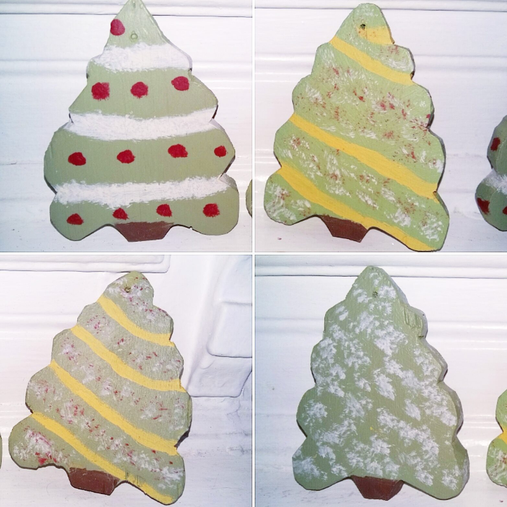
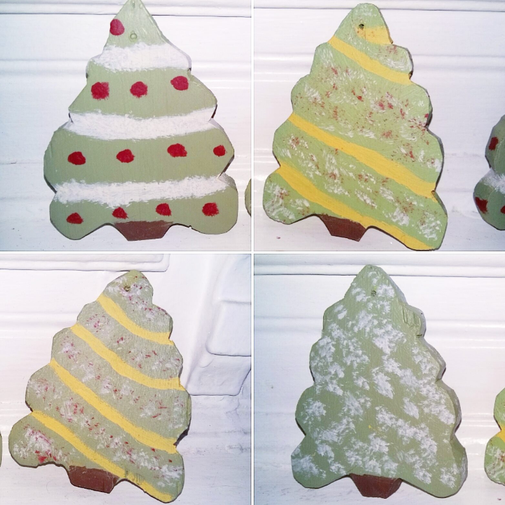

Hello 2024_RTT_60
"She walks in beauty, like the night
Of cloudless climes and starry skies;
And all that’s best of dark and bright
Meet in her aspect and her eyes;
Thus mellowed to that tender light
Which heaven to gaudy day denies.
One shade the more, one ray the less,
Had half impaired the nameless grace
Which waves in every raven tress,
Or softly lightens o’er her face;
Where thoughts serenely sweet express,
How pure, how dear their dwelling-place.
And on that cheek, and o’er that brow,
So soft, so calm, yet eloquent,
The smiles that win, the tints that glow,
But tell of days in goodness spent,
A mind at peace with all below,
A heart whose love is innocent!"
This text is bold.
This text is italic.
This text is important!
This text is emphasized.
This text is highlighted.
This text is small.
This text is deleted.
This text is inserted.
This text is superscripted.
This text is subscripted.
 

| Fun list of favorite movies |
|---|
| Singin' in the Rain |
| But I'm a Cheerleader |
| Thoda Pyaar Thoda Magic |
| Fun list of least favorite movies |
| Deadpool & Wolverine |
| Hocus Pocus |
| Little Bee (I've never seen it but 1.2 stars on imdb is pretty bad) |